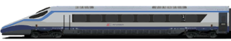
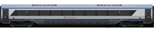
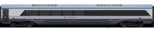
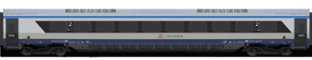
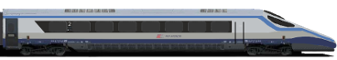

EIP 1302/3
Relacja:
Warszawa Wsch. 07:19 - Warszawa Centr. - CMK - Kraków Gł. 09:58
Kursuje:
codziennie
ED250
250km/h (200km/h)
Warszawa Wsch. - Kraków Gł.

1

- miejsca 12, 14, 15, 21, 23 dla osób niepełnosprawnych;
- wagon z dodatkowym miejscem na bagaż
.

2
- miejsca 14, 17, 18, 23, 27 dla osób niepełnosprawnych;
- miejsca 71, 72, 73, 78, 81, 82, 83, 88, 91, 92, 93, 98 dla osób z dziećmi do lat 6;
- wagon z dodatkowym miejscem na bagaż
.

3
- miejsca 11, 13 dla osób niepełnosprawnych na wózkach inwalidzkich, miejsca 12, 18 dla opiekunów osób niepełnosprawnych;
- miejsca do przewijania dziecka
.

4
- miejsca 14, 18, 23, 27, 28, 94, 98, 103, 107 dla osób niepełnosprawnych;
- wagon z dodatkowym miejscem na bagaż
.

5

- miejsca 14, 18, 23, 24, 27, 94, 98, 103, 107 dla osób niepełnosprawnych;
- miejsca 11, 13 dla osób przewożących rowery; - wagon z dodatkowym miejscem na bagaż;
.
6
- miejsca 14, 18, 23, 24, 27, 28, 93, 94, 97, 98, 103, 107 dla osób niepełnosprawnych; - miejsca 11, 13 dla osób przewożących rowery; - wagon z dodatkowym miejscem na bagaż;
.

7
- strefa ciszy; - wagon z dodatkowym miejscem na bagaż;